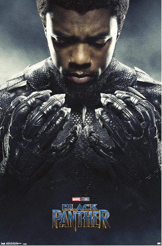
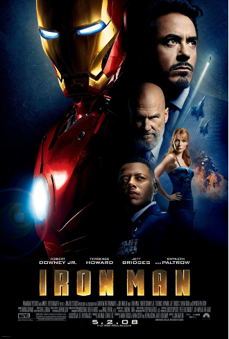
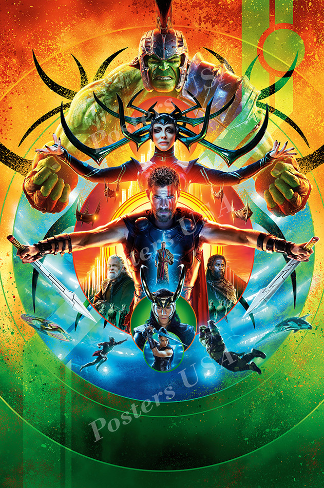
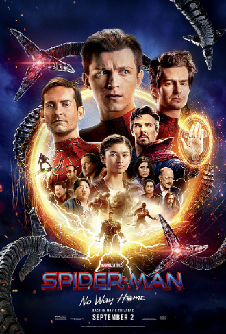

TOP 5 MOVIE RANKINGS

Black Panther (2018)
-
Received high praise for its deep cultural impact and the way it represented African culture with
respect, style, and world-building unlike anything previously seen in superhero movies.
-
Critics and audiences loved the strong character development, especially T’Challa, Shuri, and
Killmonger, whose motivations added emotional weight and complexity.
-
The film’s themes—identity, responsibility, leadership, tradition vs. progress—resonated with many
viewers and helped elevate it beyond a typical action movie.
-
Strong visual effects, an iconic soundtrack, and memorable action scenes helped solidify its
long-lasting high rating.

Avengers Endgame (2019)
-
Earned massive ratings due to its emotional payoff, bringing together over 20 films of storylines into one final, powerful conclusion.
-
Fans appreciated the character arcs for heroes like Iron Man, Captain America, and Black Widow, making
the movie feel meaningful rather than just action-focused.
-
The final battle is considered one of the most exciting moments in superhero cinema, bringing nearly every hero together in one scene.
-
Its mix of nostalgia, humor, drama, and resolution made it feel like a once-in-a-generation cinematic event.

Iron Man (2008)
-
Highly rated for launching the entire MCU with a strong, character-driven story centered on Tony Stark’s
transformation.
-
Robert Downey Jr.’s performance is often considered one of the best castings in superhero film history, helping make the movie both fun and emotionally grounded.
-
The mix of humor, action, and sci-fi concepts felt fresh at the time, setting the tone for future Marvel films.
-
It's simple but effective plot and practical effects helped it hold up well even years later.

Thor: Ragnarok (2017)
-
Applauded for reinventing Thor with a lighter, more comedic tone that fans and critics found refreshing.
-
Taika Waititi’s colorful and creative directing style made the film visually unique within the MCU.
-
The chemistry between Thor, Loki, Hulk, and new characters like Valkyrie created a fun and memorable
team dynamic.
-
Audiences enjoyed the blend of action and humor, making it feel more energetic and engaging than earlier
Thor films.

Spider-Man: No Way Home (2021)
-
Received high ratings due to the nostalgic return of Tobey Maguire and Andrew Garfield, which created an
emotional connection for fans of all generations.
-
The movie balanced multiple villains while still keeping Peter Parker’s emotional journey meaningful and central to the story.
-
Many viewers praised the way the film explored themes of sacrifice, responsibility, and what being
Spider-Man truly means.
-
Its mix of surprises, humor, emotional moments, and crowd-pleasing scenes helped it become one of the most loved Marvel entries.